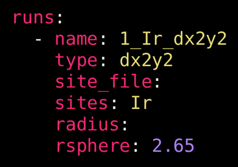
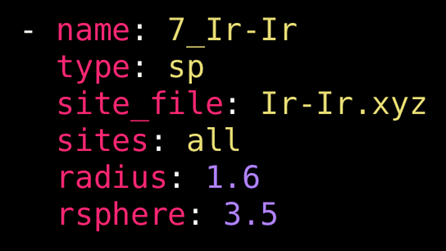
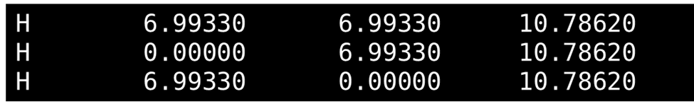
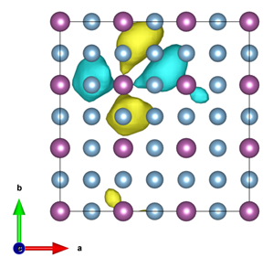

The Instructional YAML file
See also Keys for the Instructional YAML
DFT raMO.jl requires an instructions file to customize and perform the analysis. This file specifies input files, checkpoint files, and other necessary parameters. The input file must be written in YAML format (with the .yml or .yaml extension), which consists of a series of keys and values separated by colons. Lists are defined with a hyphen and spaces. Below is an example of inputs for the instructions file for DFT-raMO.jl.
Example YAML file:
checkpoint:
software: vasp
mode: auto_psphere
emin: -100 eV
emax:
runs:
- name: 1_Ir_dx2y2
type: dx2y2
sites_file:
sites: Ir
rsphere: 2.65
- name: 2_Ir_dz2
type: dz2
sites_file:
sites: Ir
rsphere: 2.65Here are some of the important components of this example file:
- The
checkpointkey can be left blank when starting a new calculation to use an initial basis set generated from the DFT calculations. Checkpoint files are automatically written by DFT-raMO. A path to a file can be given to resume the calculation. - The
softwarekey specifies which DFT software generated the wavefunction information. - The
modekey is set toauto_pspheremode, allowing DFT-raMO to automatically reject functions that do not meet the criteria set by $P_{sphere}$ analysis. - The
eminandemaxkeys allow the user to specify the energy range (in eV or Ha) of bands used in the initial basis set — leaving these values blank will default to using all bands below the Fermi energy. - The
runskey indicates a list of raMO sequences will follow. Each sequence is prepended with spaces and a hyphen. Keys within the list item are exclusive to that sequence.- The
namekey requires a string which will be used to ame the directory that stores the sequence's output files. By default, the name isrun_<number>where<number>is the number in the order. - The
typekey determines the target orbital shapes to reconstruct: atomic orbitals (s,px,py,pz,dx2y2ordx2-y2,dz2,dxy,dxz, anddyz), sp-based orbitals built from a distance criteria (sp), linear combination of atomic orbitals (lcao), or displaced atomic orbitals (displaced (AO)). - The
rspherekey corresponds to the distance from the central site to consider for $P_{sphere}$ analysis in Angstroms.
- The
A complete table of general keys and options are listed in the Keys for the Instructional YAML.
Atomic orbital-type runs
Atomic orbital (AO)-type runs, as the name suggests, are for reconstructing raMOs that replicate atomic orbitals. For AO-type runs (type: s, px, py, pz, dx2y2, dz2, dxy, dxz, or dyz), the sites key specifies which atomic sites to generate the AO for. This can be a number of options.
The most common option is to specify all atoms of a certain type.
sites: IrIt is also possible to specify the first site of that element only.
sites: Ir 1A range of atoms can also be selected specific to an atomic element,
sites: Ir 1, 3:5, 12or in order of the periodic atom list corresponding to the supercell.
sites: 8, 10, 122:144
Example options for an atomic orbital-type run.
sp-type runs
The sp-type runs are generally used to build molecular orbital-like targets with a distance-based criteria. From a central site, DFT-raMO.jl will search for atoms within a specified radius whose s and p orbitals are expected to contribute to the raMO. The sp-type run option is typically used in the reconstruction of isolobal bonds or multicentered bonding functions.
For sp-type runs, the radius key is now required, and it specifies the distance (in Angstroms) from the central site to search for atoms to include in the generation of the bonding function. The sites_file key is also now required; it must be a string pointing to a text file (typically in .xyz format) that lists the sites. Below, the figure shows the content of an example sites file containing three sites: the first item in the line is a placeholder character and is ignored, and the next three items must correspond to the Cartesian coordinates of the sites.

Example options for an sp-type run.
For sp-type runs, the sites key now is limited to integers that correspond to the lines in the .xyz file. Specific sites may be specified:
sites: 1, 2, 4:8or the all keyword may be used to indicate that the whole list will be used in the sequence.
sites: all
Example content of an .xyz file for the sites_file key.
LCAO-type runs
See LCAOs.
Displaced AO-type runs
The displaced AO-type run is an experimental feature in which the targeted AO may be displaced from the atomic site by some specified direction and distance. This feature may be relevant to properties such as polarizability. To perform this type of run, the keyword displaced must be prepended on the type of AO run. In addition, the discard mode is recommended, as this feature usually used in an exploratory context and not in a typical DFT-raMO analysis. Below is a code block with an example of an instructional YAML for a displaced AO-type run.
checkpoint:
mode: discard
emin: -100 eV
emax:
software: vasp
runs:
- name: Sc_custom_dxz
type: displaced dxz
sites: Sc
direction: [1, 1, 0]
radius: 1
rsphere: 2.2Here, we are targeting displaced Sc $d_{xz}$ atomic orbitals, as indicated by type: displaced dxz and sites: Sc. The direction of this displacement is given by direction: [1, 1, 0], where the vector corresponds to the a, b, and c unit cell vectors, meaning any values of the vector must correspond to the fractional coordinate system. This vector is later normalized by DFT-raMO.jl to obtain a unit vector. The radius key specifies the displacement along the directional unit vector in Å. In the above example, we displace the $d_{xz}$ atomic orbital by 1 Å. The raMO sequence can be executed normally and output files obtained.

A displaced Sc dxy raMO in AuCu3-type ScAl3.